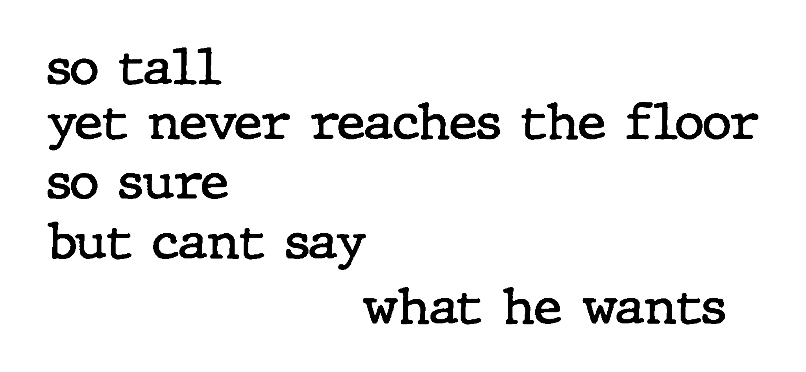
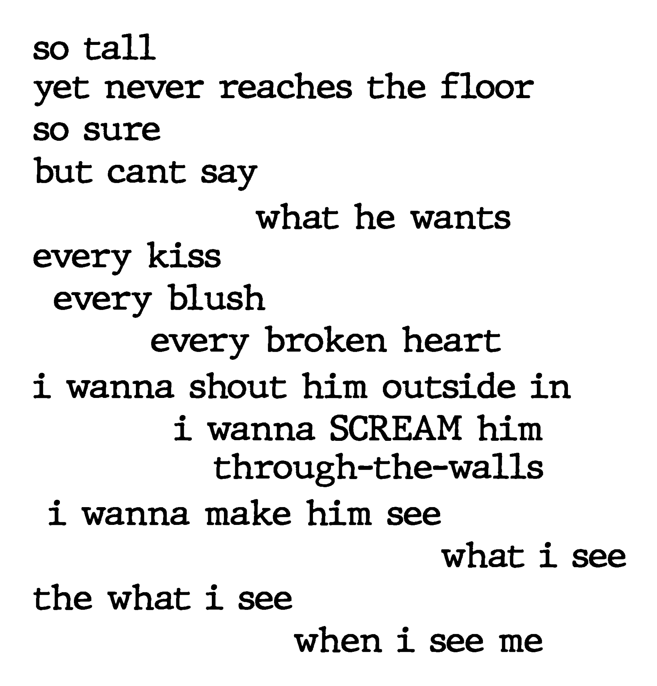

I BROUGHT MY mug of green tea into the courtyard that morning while deciding what to do about Yon’s journal and Rudi.
The sun was out. But it wasn’t yellow. A wildfire in neighboring Riverside County had turned it ashen. Along with the sky and the booths and the flies swarming around them.
That didn’t stop people from swatting the flies. Not a moment went by without a whhhaaackkk.
At the corner table, Nichelle and Wendy were scarfing down cigarettes and coffee. Though they weren’t as upbeat as they had been the day before.
Wendy quaked. “I can’t believe that she’d leave like that.”
I joined them. “Who left?”
Nichelle leaned toward me. “Kitty. She left in the night.”
“Why?” I asked next, my voice cracking.
Wendy growled. “That’s what we’re trying to figure out. She was gone this morning. Her and her stuff.”
“I heard someone crying,” Nichelle said. “It woke me.”
Wendy dropped her fists onto the table. “Someone’s crying every night.”
“You have no idea why she’d leave like that?”
“All I can tell you is that she got that job at Amazon. She was real excited about it. About getting out of here.”
“That could be what she did,” I interjected. “She got out of here.”
Wendy quaked for a second time. For a second time she growled. “She would’ve told us. Or texted us. Or returned one of ours. She wouldn’t’ve left like that.”
Nichelle eyed me. “She’s the third woman who has since I’ve been here. A few weeks ago it was Jill.”
“Before that it was Corinne,” Wendy added.
Over the years, I had witnessed a lot of terrible. I believed that I’d become numb to it. No matter how bad it got, it wouldn’t unnerve me. Or upset me.
But for some reason this did both. I couldn’t get why.
“Are we set for the party?” Wendy whispered to Nichelle. All three of us wanted to change the subject.
Nichelle dipped toward her. “We need a cake.”
“Josh said that he would get us one.”
“He did?”
“He told us last night that he gets a veteran’s discount at a bakery by his house.”
THE WOMEN WHO had left the shelter were bouncing inside my head on the buses to work.
Kitty the most. I couldn’t hide from her. Or from her fright.
On the second bus, a single passenger was with Mateo and me. A woman way in the back, ranting about her gay son in Palm Springs to the driver way in the front.
I did my best to ignore the loudness and the inanity of their exchange. “Cui bono?”
Mateo shifted toward me. “What’s that?”
“It’s Latin for who benefits? Who could benefit from these women vanishing from the shelter?”
Mateo shifted from me.
“What’s going on?”
He shifted farther. “Forget about it. You can’t change it, and it’s not the worst he’s done.”
“Someone at the shelter did something to them?”
Mateo wouldn’t answer.
“Who?”
He wouldn’t answer this either.
“Josh?”
Mateo came back to me. He shook his head. But I couldn’t tell whether he was shaking it at my question.
“We should tell someone,” I said.
He gave me a cockeyed glance. “Someone working in the shelter? You might as well have chickens complain to the foxes.”
“We could tell someone outside the shelter.”
“Who? You think people care about us? To the average person, we’re garbage. No better than cons. I’m one of those too, by the way.”
“But—”
“—Forget about it. If you want to hang on to that roof over yourself. And to your job.”
“What?”
“Before you came to the shelter, there was this guy. He couldn’t have been older than twenty. But he already had a wife and three kids. During a cubby check, they fished out an empty Grolsch bottle from his. The kind with those fancy ceramic caps. He had picked it up somewhere because it was cool-looking. But they said that it was proof he’d been drinking. It was the only proof they needed to kick him out.”
Mateo inched closer to me. “So tell me, if they’d kick out that guy and his wife and their kids—if they’d send them into the streets over trash—what would they do to someone who made the slightest tremor in the water? And don’t fool yourself into believing that you’ll hold down your job on the streets. You won’t.”
“But—”
“—Keep your mouth and your eyes shut. Follow the advice of that penguin in Madagascar. ‘Just smile and wave. Smile and wave.’”
I WIPED THE moisture from my forehead as I climbed toward the third floor with my mop. Which I plunged into the yellow pail of hot water waiting for me on the landing.
It was close to the end of my workday. But I had two other staircases to mop.
Here I was, over fifty, exhausted in many ways, running around, doing a job like those I had as a teenager.
Would I ever not be doing it? Would I remain lost in this awful desert, with the awfulness churning onto itself, for the same forty years as the Hebrews of old?
On top of all this, why was I doing it?
Not getting an answer, I wanted to quit. I wanted to toss the mop and the pail and the hot water down the stairs. I wanted to run from the building. From the town too.
Most of all, I wanted to run from Yon’s journal.
Fear prevented it. Of what struck each morning before dawn. Of what had struck worse before I got a job.
The sole cure for it scared me the worst.
I had to do what Mateo had told me. I had to hold on to my job. I had to hold back how I wanted the opposite.
But this didn’t stop me from screaming with Bad Brains and “How Low Can a Punk Get?” on my phone. Nor did it stop me from tossing the mop and the pail and the hot water down the stairs anyway.
I FINISHED LATE. I missed my first bus.
This left me with time before the next one. Mucho tiempo.
It’s the sole element that homeless people have too much of.
With no better to do, I took my bagged lunch into the conference room. My self-pity with it. I flipped on the light.
I wasn’t alone.
Sania was on the floor in a corner.
Her phone was clutched in her hand. Her face was bathed in tears.
I stepped back. “I’m sorry.”
She gasped. She jumped to her feet. She ran from the room.
I stepped back further. “Sania?”
She went on running.
This on its own was enough to stop me from feeling sorry for myself.
THE AFTERNOON WAS a futile quest to glean sense from what had happened in the conference room.
It weighed on me during both buses. It weighed on the slog to the shelter from the stop.
I was in such a fog that I forgot what day it was.
Only on entering the mess hall was I reminded that it was Friday.
Rich and his merry band of volunteers were serving dinner.
I forgot all but it.
The shelter employed a full-time cook, whose meals were as unpleasant as she was. The whole week I would wait for Fridays and Saturdays. Her days off.
On them, Rich and company would jolly on in. They would transform the same slop that we ate each night into gourmet meals. With multiple courses.
More important than that, Rich would treat us like we were guests at the finest Michelin-starred restaurant. So good was he at what he did that he could’ve worked at any restaurant in Southern California on the weekends. He could’ve gotten well paid for it.
Instead, he and the others gifted this time to us.
Faith was what drove them.
The clue that gave it away was that they would play the local Christian rock station on a portable stereo. They played it at a volume so low that most of us couldn’t have picked up on it.
I picked up on it because of a recent stint at Pastor John’s mission in the woods of Lytle Creek. The station was the only one that he would let us play.
THY WILL BE done. Thy will be done. Thy will be done.
Hilary Scott’s angelic voice would echo in my head. All day it would echo while we hauled buckets from the polluted creek. To water the saplings outside the pastor’s home in the stifling heat.
Her voice would echo and echo till it became demonic. Till I wanted to scream for mercy.
Thy will be done. Thy will be done. Thy will be done.
Seven times a day I heard the song. As well as the nine other songs in the station’s repertoire. They couldn’t slip in “Spirit in the Sky.” Or “Day by Day.” Only these ten.
The songs would play in the mission’s chapel. Before and after the pastor would scream at us like Sam Kinison, who had been a Pentecostal minister before channeling his scream into comedy. The songs would play on the van ride to and from the pastor’s church in Bloomington. Where the pastor would scream at us some more. The songs would play in our bunks at night. They’d play in the morning.
Thy will be done. Thy will be done. Thy will be done.
NOW I DIDN’T mind the music so much.
Rich and I had become friendly. In the face of why we shouldn’t have been.
Other than a fondness for Jesus Christ Superstar that embarrassed us both, we shared no traits. Or views. We would argue over the day’s issues. Over plenty of theological ones too.
But these arguments were congenial. Cheerful.
Rich was among the evangelicals I would come to love in my years circling the ditch. When you fall through the bottom, they are the ones wanting to lift you up.
I would encounter this time after time. Including by that pastor, who took me in after my commitment at the Closed West Psychiatric Wing of San Bernardino Community Hospital. He took in violent criminals. Hardened addicts. He took in psychopaths. He took in the trash nobody wanted.
He and Rich were the majority of evangelicals. People who, like the rest of us, weren’t flawless but were good. They were good people making the world the teeniest better, and that’s not bad.
AFTER CHATTING WITH Rich, I took my meal of spiced tonnarelli and vegetables into the courtyard. To a booth where a craggy-faced man was eating by himself.
“Mels Sergeiovich,” I said to him, biting my tongue. I had to do this each time I said his first name, an acronym for “Marx, Engels, Lenin, Stalin.”
I bowed toward the seat across from him. “Mogu li k vam prisoedinit’sya?”
Mels assented. “S udovol’stviyem.”
I joined Mels.
He was another volunteer at the shelter. He had been a client of it a while back.
Mels was as different from me as Rich was. But not because of where he was from.
He wore Donald Trump T-shirts. He went to church in them. He must’ve had dozens. I never spotted him in the same one. He had Trump socks as well. I cringed at what he might’ve been wearing beneath his pants.
Yet I adored him. He tolerated my pidgin Russian.
The Russian language is similar to the Czech that I learned from my grandparents. But it’s not similar enough. Most Russians can’t stomach the way I abuse it.
But Mels would let me speak to him in it. I guess he had a hankering to converse in his mother tongue.
Or could it have been that, with a name like his, he wasn’t that particular?
Mels ate to a Vysotsky song playing on his phone. Vladimir Vysotsky was what you might call a Russian Bob Dylan. Or Leonard Cohen. With a splattering of Lou Reed.
The parallels between the four went beyond their styles of music. Or their songs’ subjects. Like those three, Vysotsky was Jewish. Also like them, he may not have had a perfect voice.
But it didn’t matter. He sang with a soul that was all you heard.
Mels had told me that Vysotsky’s songs had helped him through a gulag in the late 1970s. He would spend his nights listening to his memories of them while reading the samizdat editions of Isaac Babel’s stories. Those prisoners would pass between them like fathers to sons.
What Vysotsky’s music meant to Mels laid bare that evening. It had etched onto him.
The song that he had been listening to ended. I asked him if he could play “Koni priveredlivye.”
He obliged.
This was Vysotsky’s signature song. They translate the title into English as either “Fastidious Horses” or “Capricious Horses.”
Neither feels right. I can’t say whether you can translate it. I can’t. But the title matters not.
The song is about a man driven to his ruin. By forces he’s both feeding and unable to control. “Slow down a little!” he shouts at the horses he’s lashing forward. “Slow down!”
They don’t slow. They don’t obey. They carry him to the abyss.
I’ve loved the song from the first I experienced it. Mikhail Baryshnikov danced to it in the film White Nights.
Each version I’ve experienced since has been different. But none moved me like the one in the courtyard.
I caught on that the lyrics were about several of us at the shelter. Counted in this were both Mels and I.
He was crying at the end of it. I wanted to cry with him.
I might have. If I had been capable of any genuine feeling.
I WAS CLEANING the mess hall bathrooms when I ran into Hank. I smirked at him. “Let me guess what you were up to today.”
“Go ahead.”
“You walked to San Francisco and back.”
“Too easy.”
You would never guess that this scrawny, over-the-hill chain-smoker would be an athletic marvel.
He had come to the shelter after hiking from Barstow in less than a day. He’d trekked the forty miles through the scorching desert along train tracks, carrying a forty-pound backpack.
On hearing of this, I chalked it up as another tall tale from a homeless person. Till I went to the mall with him on Labor Day.
I was a half mile behind him when he got there. He walked faster than most of us run.
Hank had also spent semesters at MIT. He had mad carpentry and electrical skills. He was more of an anomaly at the shelter than I was.
But I figure he was another of us who couldn’t stop lashing their horses forward.
MARIO FIST-BUMPED ME. His hand enveloped mine.
Brawny with a shaved head and a mustache and mi vida loca tats by his right eye, the man could’ve stared down the Devil.
But he was the sweetest guy in the shelter.
Not a person there had he not taken under his ample wings when they arrived. He made us feel safe and welcome.
The two of us would often tease each other. About our mutual travails. Tonight, it was his turn. “Pastor Vic was here for you.”
“Yeah?”
“He’s expecting you. You only gotta bring knee pads and a toothbrush. The knee pads are optional.”
I WANTED TO make sure that I would get my mail that evening. I got into the check-in line before Gerry. Well before him. I kept checking for him over my shoulder.
Josh was off that night. A new guy named Bob was working in his place.
I could feel the lack of stress. I got Yon’s letter without hassle. I took it to the corner booth.
Tearing open the envelope, I remembered that I hadn’t decided whether to continue reading the story to Rudi. I had been avoiding it.
I was avoiding it now.
I can disappear a whole lot better than you. And for longer!
I feared the story. I feared what it could do to both Rudi and me.
But I feared more not telling her. I also couldn’t deny that I was eager to discover the pages’ contents.
Pulling out the entries, I chose to wing it.
I plugged in my phone. I called Rudi.
“I’m sorry,” she said.
“For what?” I asked with forced ignorance.
“For getting mad at you.”
“It’s okay. But you shouldn’t be going through this.”
“But you’re gonna tell me it anyway.”
“But I’m gonna tell you it anyway.”
ON THE MORNING after reading the Newsweek article, Yon felt the same sickness that he had felt the night before.
It rose with the gray skies above his home. It hung over him.
He couldn’t shake the sickness off. It so overwhelmed him that his fate was no longer on his mind.
Hate was.
This hadn’t eased on leaving his house. But he had no idea what to do about it.
So he stayed away from Rudi.
He got to school late. He didn’t go to lunch. He spent the hour hiding in the library.
But he couldn’t stay away from Rudi in calculus class.
Before it started, he sat in his regular front-row seat.
How would he react to her?
Would he curse? Would he demand answers?
Neither. She had killed a Jew. Or had partaken in it.
No rationale of it would do. No excuse for it. He would never speak to her.
He told himself this twice. He repeated it three more times.
The bell rang.
Rudi staggered into the classroom, shaken from what had happened with Deke.
Yon ignored this. Or he faked it. He kept straight ahead.
But he couldn’t hide his disgust.
It rattled Rudi.
This was all over her face as she dragged herself toward the back wall.
With this came another sentiment. One that rattled Yon.
Hurt.
How could you hurt a monster?
He could only say that he had.
YON CHOSE A different tactic the next day.
He acted as if Rudi hadn’t come into his life.
At lunch, he was listening to his friends’ dumb jokes. He was telling a few.
On top of that—with his eyes meeting Darlene’s—he pleaded with himself to feel the slightest toward her.
A disturbance nearby disturbed the two.
Rudi had bumped into someone. Her tray was on the floor. It was close to empty.
She lifted it. She piled hate onto Yon.
But it couldn’t mask the same hurt as before. It highlighted it.
Yon wasn’t alone in hitting upon this.
Mirth fell over Darlene.
She wrapped her arm around Yon’s. Like a snake.
He slid from both girls. But from himself more.
“What is your problem?” Joey groaned to Rudi from the table’s other side.
She marched off.
“That’s right. Run off, loser. Not everyone is scared of you. Or that sucker punch you threw. I’d like you to try that with me.”
Rudi continued her marching. But she slowed.
Lis slumped past her. Her head was down.
As with Jared days earlier, an attribute in the girl jutted out at Rudi.
It jutted out only at her.
“MANY HAVE ATTACKED Leibniz for arguing in Theodicy that we live in ‘the best of all possible worlds,’” Mr. Little said to the class from behind his desk. “Most famously and brutally, Voltaire in Candide.”
Yon heard this. But he wasn’t listening. He was going through the same motions that he had in each of his classes.
The bearded teacher raised himself from his chair. “But is this fair? Leibniz wasn’t saying that we live in a perfect world. A man smart enough to discover calculus must’ve seen that it wasn’t.”
Mr. Little drew in the afternoon sky through the windows. “What he was saying is that it’s not possible to imagine a world better than what we’ve got. If you don’t believe him, try picturing one. I bet you can’t. It’s because of free will. The lone means of removing the suffering and the ugliness in our world is by removing free will. It’s the reason bad happens. But it’s also what brings us good and the infinite possibilities that come with each next moment. What’s more, if we could eliminate the bad, we’d never appreciate the good. Or realize how dear each of our finite moments is.”
The teacher returned to his seat. He swiveled on it from left to right. “Along with free will, we have life and what makes it worth living. Poetry. Music. Art. We have love. Best of all, we have Pink Bubblegum Ice Cream this month at Baskin-Robbins.”
Most in class laughed.
Yon didn’t. But he was listening. He was imagining those infinite possibilities. He was imagining one.
No matter how impossible it was.
YON PARKED IN his garage.
So lost had he become in himself that he couldn’t remember driving from school.
Slithering past the door, he stopped in the hallway. Outside the living room.
His mother had a guest. An old movie on TV.
A year earlier, she wouldn’t have been wasting the afternoon like this.
But it wasn’t unusual anymore. She had given up living.
Apart from making out her will, the extent of her doings these days was turning on Julie London and old movies and going shopping. They were the circle of havens where she could escape. To before the summer. From what came after it.
Her companion that day was Miracle on 34th Street.
Yon had seen the movie too many times. But he stood against a wall in the hallway. He joined them.
Kris Kringle was speaking Dutch with the refugee girl. They sang a Christmas song with her on his lap.
Mrs. Levy cried.
This was more out of character for her.
Through the entire terrible summer that had passed, she didn’t cry. She didn’t when Yon was doing it night after night.
He believed that not a trouble could get to his mother. Like that other someone.
But she was as human as her.
I GOT CURIOUS about that “other someone.”
“What were you doing during this?” I asked Rudi.
“I wasn’t doing.”
I would learn otherwise.
RUDI HAD CONVINCED herself that Yon’s change toward her hadn’t affected her. That she’d expected it.
But she couldn’t deny the funk she was in. Or that her treads had flattened.
To lift them, she would go to the animal hospital. She’d call on the dog that she had helped rescue.
Visiting her was stepping into a flashlight. The dog would brighten her. She would go nuts when Rudi showed up.
Brushing off her pain and misery, she wouldn’t stop licking Rudi. Or wagging her tail.
This wasn’t all to these visits.
A lot of Rudi was in that dog, left at an early age to fend for herself. Without the means of making it so. This must’ve drawn her.
“You better be careful,” Dr. Winston said to Rudi while passing her caressing the napping pup on her lap. “You’ll get attached.”
“It’s too late for that. Nobody’s claimed her?”
“Nope.”
“How much longer does she have to stay?”
“A few weeks. A month. Fortunately, that young man you brought her here with, he paid for three months of care.”
“He did?”
“He’s pretty nice.”
Rudi didn’t react.
The vet gushed. “He’s pretty handsome too.”
“I hadn’t noticed.”
RUDI DIDN’T VISIT the dog only by herself.
On weekends, she would go with Mariana when she volunteered at the hospital.
One afternoon, she went with someone other.
School let out. She was waiting for the bus by the stop.
Owen halted by her.
The two swapped heys. They faced the road.
He snuck a peek at her. “Where you heading?”
“The animal hospital.”
“You sick?”
Rudi laughed. In spite of herself. “I’m going to see a dog.”
“Yeah, I heard about that.”
“Where you heading?”
“Nowhere. Home, I guess.”
“You wanna come with me?”
THE DOG LICKED Owen’s hand.
Multiple times she did. While wagging her tail.
“She likes me,” he said with doubt clouding his voice.
Rudi petted the dog’s head. “They can tell when someone’s nice.”
“No one’s ever called me that.”
“I know what that’s like.”
“I bet she wouldn’t be licking me if she knew about my record.”
“She doesn’t care about mine.”
“We have a lot in common. Other than that you’re smart.”
“You’re not so dumb.”
“They held me back in fifth grade. Twice.”
“That doesn’t mean you’re dumb.”
“Everyone thinks I’m dumb. My dad thinks it. He wants me to drop out and get a job.”
“What do you want?”
“I don’t want to quit. That’s what I want. But it ain’t so simple.”
“Why?”
Owen inched away. “I . . . I don’t read so good.”
Rudi inched away herself. “I could help you.”
Owen’s eyebrows raised. He inched back to her. “You’d do that?”
“Somebody helped me. Everybody needs help at times.”
“I wouldn’t have believed that you ever needed help.”
“You’d be wrong.”
Their eyes met. They remained that way.
Until Owen’s went astray.
RUDI AND OWEN faltered toward the bus stop.
His sight was on all points but on her.
She exhaled. “What’s wrong?”
He wouldn’t tell her.
But she wouldn’t relent.
He averted his eyes. As far as he could. “I saw how Yon was ignoring you. I would never do that.”
Rudi became quiet. She hung her sight on all points but on him.
Owen bumbled, “I, I’d be good to you. I swear I would.”
Her quiet got louder.
He staggered off. “I better go.”
She shouted his name.
But he moved faster. With more fright.
More than he could’ve ever evoked.
YON RETURNED TO the same opposite of happy that he had before meeting Rudi. To whatever was in his horizon. Above all to himself.
Would he ever feel different?
One day he could.
He was wandering through a corridor between classes. Rudi was doing the same. From the other way.
She neared Joey, who was arguing with Lis. Much as they had been doing of late.
But it was more intense. More animated. Panic was swathing the girl’s face.
That wasn’t the limit of what was on her face. Her left eye was swollen.
Yon wasn’t the only person who latched onto this.
Rudi came upon the pair. She probed both the girl and Joey.
He dumped scorn onto her. “Run off, loser.”
That was about what she did. She trudged onward. As if she didn’t care.
Lis fled.
But Joey grabbed her arm. He hoisted his at her. “You’re still not getting it! But you will!”
Rudi ceased. She feigned an allusion to a lull.
Turning around, she strode behind Joey. “I’d like you to try that with me.”
Grunting, Joey swung the back of his hand at her.
She dodged it.
He hit a locker. He squawked. He let go of Lis.
She sprinted down the hallway. So frantic was she to get away that she ran into Jared as he exited a stairway.
His body wobbled. “I’m so sorry.”
She didn’t say a word. But she calmed in his gentleness.
Yon returned to Rudi and to Joey.
He cocked his fist back. His cheeks were bright red. “Try to miss this one.”
“There won’t be a ‘this one,’” she said with matter-of-factness.
She swung her leg into Joey’s groin. He fell to the floor.
“WHY?” Yon wrote in his journal, filling half a page.
It made no sense. It made less when he remembered how Lis had been snickering at Rudi on her first day of school.
But it makes sense to me.
Rudi wasn’t doing it for Lis. She was doing it for all the Lises. All those who couldn’t fight back.
That included herself.
Rudi stood over Joey and his wincing and his squirming. She put her hands on her hips. “It’s not fun when the girl hits too, is it?”
He winced and squirmed more.
She sputtered off. “Next time I won’t be so nice.”
Her apathy returned.
But she wasn’t fooling Yon.
He could no longer fool himself.
YON PARKED HIS bike in the school lot. By the expanding morning sunshine.
Rudi came. She passed him straddling his seat. As if he weren’t there.
I suppose this was like the scene from The Third Man. When Alida Valli walks past Joseph Cotten. Never to take notice of him. At that instant or ever.
That was how the movie ended. But Yon’s story couldn’t end with such perfectness. Regardless of how he wanted it to.
Rudi entered school.
Yon stayed on his bike. For no particular reason.
The bell for first period rang.
He slumped inside the building.
Not bothering with his locker, he went straight to his computer class.
Through its door, he poked his head.
People were punching cards. Like they did each day.
Escaping this, Yon stumbled off. He stumbled down the hall.
He stumbled down the stairwell to the second floor. He stumbled down that hallway too. He was well aware of where he was stumbling.
“A few of your poems impressed me,” spoke Ms. Krasner.
Yon raced to the room’s doorway.
The teacher was handing papers to the class.
Rudi was slouching in the back row, her arms crossed.
Krasner stopped by her. With the final page in her hand.
She frowned. “Of course, some chaff was among the wheat.”
Rudi slouched lower.
The woman dropped the typed piece of paper onto the table. “This wasn’t one of those.”
Rudi raised her eyes. They bulged at the A+ on the page’s top.
Krasner blasted daggers at the poem. Lots. “I expected to hate this. Boy, did I. But, damn you, girl, you gave me no choice. It’s too bad Cummings died before you were born. You two are coupled souls. Fellow punks.”
Yon’s curiosity dipped him forward. He read the poem’s opening verses.

Yon shot past curious. He dipped further. He was toppling over.
He read the remaining lines.
Rudi drifted toward the door. She had gotten the same sense that she had gotten when Yon had been there last.
He shocked her. Beyond how he was.
She slung the poem behind her back.
The teacher leaned over the back table.
Discovering the source of Rudi’s stupor, she stomped her foot at it. “Can I help you?”
Yon ran.
“It appears,” Krasner’s voice emptied out into the hall, “Ms. Weiss had a muse for her poem.”
RUDI BROKE MY narrative. She laughed.
I had to ask. “What’s so funny?”
“That’s not exactly what the teacher said. I kinda remember her saying, ‘Ms. Weiss had a muse for her poem. A very cute one.’”
YON DIDN’T SLEEP that night.
He tossed himself around. He begged for the words of Rudi’s poem to leave his head. Or not have meaning.
His tossing hadn’t eased with daybreak. He tossed from side to side. Around and around.
Why couldn’t a monster write that poem? Were they not capable of beauty?
He remembered the music class he had taken years before. The teacher, one lazy afternoon, played the prelude to Tristan and Isolde.
They were the joyfulest sounds that he had ever heard.
But Wagner was a monster. In the same way that Rudi was.
By the time the alarm clock rang, Yon had come up with the excuses he needed to persuade himself that Rudi’s poem had no meaning for him.
He had free will too.
On top of that, he had fear.
Still, he leapt to his waist. He leapt off his bed. Into the shower.
He had no delusions as to why.
THE GARAGE DOOR opened.
On the other side of it was a silver Jaguar and a gold Mercedes convertible. The Harley was between them.
This sped onto the driveway with Yon. It sped down Overhill Road. It sped to Rudi’s house.
He hid behind the old burgundy pickup truck. The same that he had hid behind before.
What would he say to Rudi?
He had no answer. But he wouldn’t rest without certainty about her. Without certainty about the truth of that night outside Trenton.
Rudi and the FBI agent left the house. They meandered toward the blue sedan.
She wasn’t wearing her coat despite the cold. But what was sticking out was how frightened she was. How she was dying not to show it.
The sedan drove off.
Yon followed it. A good distance back. Not to school. But along Springfield Avenue. To Downtown Newark.
The car reached the United States Courthouse on Federal Square. It steered into a multilevel garage across the street.
Yon went up the road.
He parked in a lot on street level. He waited.
Rudi and the FBI agent left the garage. They crossed the street into the courthouse.
Yon continued his waiting. By the building’s doors.
DAYLIGHT WAS BURNING at full might.
Rudi exited the courthouse with the FBI agent and another man. He was donning an expensive charcoal three-piece suit and a more expensive haircut.
They rested by a set of steps.
The expensive man gave Rudi a sideways glance. “The grand jury should issue an indictment in the next few days. We’ll bring you back when the trial starts.”
Rudi slunk down the stairs. “If I’m alive.”
The FBI agent tailed her. He sneered at her through their entering the garage.
THE BLUE SEDAN slowed by Columbia on Valley Road.
Rudi hopped out. She scampered toward the school. She didn’t bother closing the door.
The FBI agent shut it. He drove off.
Yon jumped the curb. He rode over a patch of grass to the parking lot. He slipped beside Rudi.
She shone the same hurt as before. “What do you want?”
He idled his bike. “I’m sorry.”
She pressed on toward the school.
“It’s just that, it’s just that I’m Jewish.”
Rudi froze. “What?”
“You’re testifying against Deke, aren’t you?”
Rudi swung herself toward Yon. She pitched her fists at him. “Have you been following me?”
“Ever since you got here, I was sure . . . I was sure that I was figuring out who you were. But it’s me I’ve been figuring out.”
“And who are you?” she snapped.
Yon recited her poem. He recited it word for word. With all of its lilts and pauses.

Yon rode to Rudi and her startle. “I’m the guy in your drawing.”
She was silent.
He lurched toward her. He startled her more than his reciting had.
It scared her too. Enough to jump back.
“Or I want to be,” he said.
She took a tentative step to him. Not sure of herself. Or of him. She was about to cry. “You made me feel so . . .”
“I’m sorry.” He struggled to make out his voice.
She drew closer to him.
The two plunged forward.
They were inches from each other.
The school bell rang. It stiffened them both.
Rudi shook her head. “I wanna be anywhere but in class.”
“I’ve got the best ‘anywhere.’”
RUDI FOCUSED ON the waterfall. From the rocks she and Yon were hanging over in the South Mountain Reservation. A woodland preserve that had defied the state’s overdeveloped image.
Rudi dipped over the running water. “I met Deke in the hospital that we were sent to clean up. It seems like forever ago. But it was no more than six months back.”
She dipped further over the water. “He didn’t wow me. But he did give me my name.”
Yon gaped at her. “What do you mean?”
“I was going by ‘Trudi.’ Till he told me that nobody was ever afraid of a ‘Trudi.’”
“What’s your real name?”
“One that makes me chuck.”
Rudi heaved a breath. “A whole lot was making me chuck. All that was going on were drugs. And they were making me chuck. So, after I left the hospital, I visited Deke.”
She pushed her eyes from the water. Onto the trees around them. “He was cranking ‘Blank Generation’ by Richard Hell on this gigantic stereo outside his house. He cranked it for twenty minutes. He cranked it so that I heard it five blocks away.”
Yon edged toward her. “That was the song you were singing on your first day of school, wasn’t it?”
“It’s my favorite. Listening to it is the one time that I’m not alone. The one time someone is like me. I’ve got an infinite tape of it in my bag. So a good song is always on.”
“I like it too.”
Now it was Rudi’s turn to gape. At him. “You do?”
“That was the one time I heard it. But yeah. It’s stupid, but I swore . . . I swore that you were singing about me.”
His words caught her off guard. But she passed over them. She went back to the water. “Deke played the Buzzcocks next. ‘What Do I Get?’ He followed it with X and the Adolescents. And the hook was in. Worse than drugs. It was the one substitute that I had for them. In ways, it was better. It lasted longer. The only aftereffects were bruises.”
Rudi raised her head. “I’d spend days at Deke’s listening to records. He had hundreds. He stole them all. He also stole a copy of The Decline of Western Civilization and a projector. We played that movie on his living room wall a jillion times. Some nights we’d run it through the night. I can imitate each inflection on Lee Ving’s face when he sings.”
She raised her head farther. Into the sky. “The music was light. It surged through me. It made me ten feet tall. It made me into someone who wasn’t a victim. Someone no one was pushing around and was never afraid. Someone who could splatter the world under her boot and breathe a bonfire. More than that, the music got me from each day to the next. To and from each rottenness.”
Yon lowered his eyes. “It didn’t matter, it didn’t matter that Deke hated Jews?”
Rudi clenched her fists. She stewed. “It didn’t. I could give you a bunch of excuses. My mom raised me on that crap. But I never questioned it. Not with her. Or with my stepdad. And not with Deke and his friends. I buried my head in myself. I pretended that it didn’t have to do with me.”
The conversation fell quiet. They returned to the water. They avoided what they both needed to talk about.
This stalled when Yon blurted out, “What about the kid who got killed?”
Rudi labored to answer. She had to close and open her eyes. “Deke, he would put on shows in his house with local bands. I was dealing for him at them. A couple of college kids popped in one night. I sold them weed. I talked to one. We danced. It was no big deal. But Deke got jealous. And when he learned that they were from a Jewish fraternity . . .”
“He killed him.”
“Violence was at these shows. Some people, they hear in the music what’s not there. They hear what they want to hear. Not just the violence. But the racism. The truth is that it’s the one music that speaks out against it. It speaks out against all isms. It shouts it as loud as can be. It shouted it so loud that I heard it. And Richard Hell is Jewish. So are Keith Morris and Joey Ramone. Ron Reyes is Puerto Rican. Bad Brains are Black. Deke is the one who told me this. But to him and people like him, every punk song is a call for a race war and a second Holocaust. Every punk song is about splitting someone’s head open. A couple of times, he put people in the hospital. But never did he do this.”
Rudi was on the cusp of breaking apart. The pieces were about to tumble into the ravine. “He had the kid on the floor. He wouldn’t stop beating him. And I stood there.”
Yon lifted his eyes at her. “You couldn’t’ve done more.”
“I could’ve tried.”
“You are.”
Smoke sizzled from Rudi. “Don’t make me into a hero. I’m cutting a deal. Like jillions of other losers.”
“You’re not a loser!”
“Even my mom thought so! She left without saying a word. I wasn’t there.”
“She’s who lost.”
Rudi’s face showed how she yearned to believe Yon. How desperate she was for it.
He edged closer toward her. “That blood you said was on your overcoat, it was the kid’s, wasn’t it?”
She didn’t answer. She recoiled from him.
“Wasn’t it?” he repeated. Louder.
“Everyone ran when they heard the sirens. Deke ran. I had no idea what to do. I was pressuring the boy’s wounds with my coat when the cops came.”
“You’re not wearing it today.”
“I forgot it. I was so out of it this morning. I didn’t sleep last night. I haven’t slept through the night since it happened. I keep seeing that kid. I relive the same ten minutes. With it ending the same. Him dying. He dies because of me. I’ll never change this.”
Yon wanted to take her pain. He couldn’t help wanting it.
But no means of it would turn up.
He said the first words that did. “You must be cold.”
Rudi crossed her arms. Only now was she cold.
She scowled. “I’m fine.”
He took off his jacket. “I want you to wear mine.”
She kept her arms crossed.
But he wouldn’t relent.
She gave in. She let him put the jacket on.
But she cringed at the corniness of it.
He guided her arms through the sleeves. “It looks good on you.”
“How would you know?”
“Believe me, I know.”
They finished with the jacket. Yon reached for Rudi’s hand.
But he didn’t take it. He took in the forest.
He recalled how difficult it had been getting Rudi through it.
RUDI TRAILED YON through the trees.
She zigzagged her way past branches. She tripped over rocks in her laceless Chuck Taylors. She fell down a mound of leaves and dirt.
He muted his humor. “You okay?”
She rocketed to her feet. She slapped the filth off her knees. “If you hadn’t noticed, I’m not exactly a Camp Fire Girl.”
YON RETURNED TO the falls. “I come here often. This is my favorite place. My earliest memories are of this forest. When I was a kid, a deer paddock was on Crest Drive where we parked. I’d feed them Cracker Jack from my palm.”
Rudi laughed. “That must’ve done wonders for their teeth.”
Her echo came back at her. Its peacefulness.
She waded in the beauty around her. “You were right. This is the best ‘anywhere.’”
Yon imagined one better. Any “where” with her in it.
But he only wrote this in his journal.
The words that got out were, “The falls help me. They help me forget.”
“I wanna forget. I wanna forget it all.”
“When my dad, when he was dying over the summer, I came here each day.”
YON SAGGED INTO the hospital room. Toward the larger-than-life man withering before him.
Slower he moved. Over “Two Sleepy People” playing from a tape recorder by the bed.
The man hiked his head off the pillow. Into the pain. “I wish, I wish I could be here for your first time.”
“You’re a bit late for that, Dad.”
“I mean the first time that you fall in love.”
“What makes you sure that I haven’t?”
“I’m sure.”
Yon couldn’t speak.
His father hiked his head further. “You get one chance to fall in love for the first time. Don’t let it get by you.”
BACK AT THE waterfall, surprise had come over Rudi’s face. From what Yon had said about his father.
Surprise wasn’t all that she was expressing. It mixed with a sorrow deeper than he could conceive.
This surprised him.
She continued surprising him. By draping her arm around him.
He did the same to her.
She took a hit of mountain air. “This forest, it reminds me of . . .”
“What?”
She shook him off. “It’s stupid.”
“Tell me. Please tell me.”
“It reminds me of a fairy tale.”
Yon’s surprise reached a new level. “You read fairy tales?”
“I did when I was a kid. The library was the only place I could hide. From my mom and especially from my stepdad. I’d spend afternoons there. I did this before I could read.”
Euphoria swept over Rudi. “I pestered this old librarian to teach me. She would sit outside in the garden and play classical records, and I would pester her. ‘You’ll learn when you start school,’ she would tell me. But I couldn’t wait. Not a fraction of a millisecond. Not with no one to read to me. I pestered her and pestered her till she caved.”
Rudi’s euphoria rose higher. Higher than the trees. “For a month of afternoons, she taught me. I can remember it all. Sitting on her lap in the sun. With those books. And Bach and Pachelbel and Monteverdi behind us. Then I read their stash of fairy tales. I wrote my own too. And illustrated it.”
Yon staggered. “Get out.”
“It was stick figures and finger paint and junk like that. But I was proud of it. I was really proud of that story. I so wanted to believe in it. To make it come true.”
“What was it about?”
“Oh, I don’t remember. A girl and a prince and a happily ever after. The usual nonsense.”
“It’s not nonsense to me.”
Rudi gauged him. Both him and what he had said.
The same lack of sureness came over her that had come over her outside the school.
She lowered her head. Onto his shoulder.
This didn’t surprise him. It shocked him.
What shocked him wasn’t the act. It was how he had reacted to it.
Girls had done this to him a jillion times. But never had it meaning. Not to them. Or to him. Nor had it made him feel as good as he did at that moment.
But why had it? Was it because all Rudi did had meaning and that this in itself had meaning?
“I . . .” he stuttered with raindrops falling onto him.
He wanted to say, “I want you to be my girl.” He scrawled it across a page of his journal. He scrawled it on many.
But he wanted to do more than say it.
He wanted to shout the words. He wanted the living and the dead in the forest to hear him. He could hear the words echo back.
I want you to be my girl.
But he was afraid.
He was afraid of her. He was afraid of death. He feared most not fearing either.
The words that he said to her were, “You hungry?”
YON AND RUDI sat across from each other. At a booth in Grunnings. A pair of Cokes was beside them.
The diner abutted the reservation. Its bay window in back provided a view that overlooked the forest. It was enchanting the two.
An old song cut in. It swayed them toward it.
Tables over, a couple older than the music were playing it on the jukebox at their table.
The song unnerved Yon. It was the same as the one on that snowy afternoon in the bedroom at the beginning of his story. The same that had been in his head on the night after meeting Rudi.
But should it have unnerved him? Shouldn’t he have expected it? Shouldn’t he have assumed that the playing of it was as inevitable as the crazy-looking girl across from him?
Rudi swayed back to Yon. “I’ve heard this song. In a sort of dream that I had the night I got here.”
He got more unnerved. “A dream?”
“Yeah, I was . . .”
“Dancing with someone?”
“How did you . . .”
Yon didn’t answer.
Rudi became unnerved herself. She had to compose herself to continue. “I couldn’t remember where I had heard it before. But I do now. They were dancing to it at the end of that Quincy episode. The one where he went after punk rock. This was his example of music that I should be listening to.”
Yon’s eyes drifted. “I guess you don’t like it much.”
“I didn’t say that. It’s different. Ancient.”
He swung back to her. “Like E. E. Cummings?”
She gave him her dirty look.
“It’s called ‘Moonlight Serenade.’ By Glenn Miller. It was a big hit in the thirties. I remember my grandma having it on repeat in her room. On one of those 78 players. Sometimes, I’d sit outside her door and listen with her. Never did I get tired of it. I hadn’t heard it in years. Till my . . .”
“Till your what?”
“It doesn’t matter.”
The song reached its break.
Yon and Rudi gravitated toward it.
The couple was kissing.
Yon returned to Rudi. “My dad told me, he told me that, when he first danced with my mom, Julie London was singing ‘Two Sleepy People’ at a nightclub they were at in New York City. It would be their song. The playing of it would remind him of how it struck him at that moment he was in lov . . .”
Both Yon and Rudi froze.
He had frozen because of how Rudi had frozen to what he had said. Or had come close to saying.
Both dread and excitement were in her eyes. He felt them both. He could tell that their cause was the same.
He was in love with the crazy-looking girl across from him. Only now was he aware of it.
Now so was she.
Smidgen by smidgen, he moved toward her. She to him. They couldn’t stop. Or slow.
Their lips were a breath away.
“Two garden salads,” barked a voice, springing the two back in their seats.
The waitress served them the salads. A heaping dish of skepticism came with it. “That’s all you guys want?”
Yon got bashful. “That’s all you’ve got without meat.”
“Kids today,” the woman hissed. She stomped off, leaving Yon and Rudi to gleam at each other.
Through this, he lifted his head toward a table down the way. “They do have fries.”
She turned up her nose. “No, thanks.”
“So, how did you become a vegetarian?”
“You’ll laugh at me.”
“I won’t. I promise.”
“It was because of Bambi.”
He came close to falling over. “Bambi?”
She seethed at him. “You’re laughing at me.”
“I’m not. Well, maybe I am.”
“When they shoot his mom, when he cries out for her, I felt exactly what he was. It was real personal for me. What about you? How did you become a vegetarian?”
“One morning I was. It could’ve been those deer I fed Cracker Jack to as a kid. Or it could’ve been Howard the Duck. But I never did see Bambi.”
YON PAID THE bill at the register.
He and Rudi sauntered toward the exits. He eyed her. “What are you gonna do after you testify?”
“I can’t tell you what I’ll do after today. Deke isn’t going away.”
“How did he learn you were here?”
“That I can’t tell you either. But it isn’t because I’m testifying against him. I told him that I was staying with an uncle. He believed me.”
“What does he want from you?”
“What he’s wanted since we met.”
The two got to the front doors. Rudi opened one for Yon.
He smirked. “Touché, Ms. Weiss.”
They stepped outside, beneath an awning.
It was raining. This was getting harder.
Yon stretched out his hand. Into the wetness. “I could call my mom. She could give us a lift.”
Rudi didn’t reply. She strutted into the falling water. To the Harley. She straddled the seat. “You said that you lived dangerously.”
Yon hustled into the rain. He dove onto the motorcycle.
Rudi whipped her arms around him.
He gunned the bike. It sped from the parking lot.
It sped down South Orange Avenue. It made a sharp left onto Harding Drive. This was so sharp that the two could’ve kissed the ground.
The Harley regained balance.
Rudi screeched. She slung her legs over Yon. “I’m so alive!”
He felt like hollering it with her. Louder than she had.
Instead, he checked his rearview mirror.
She was tilting her head back. To catch the falling water.
But what stood out was her joy. Never had joy so stood out to Yon. It stood out more than what had been on the girl in the Vermeer painting.
Was it on his face?
Another pearl plunked Yon.
He had gotten the bike on the day that he’d gotten his driver’s license, but this was the first that he had fun on it. Did he ever have fun before her?
YON PARKED BY his house.
The rain was petering out. The fun too.
Rudi had become quiet.
He turned. To her gawking at his house.
Discomfort had splashed over her.
She hid this below a quip. “I thought Versailles was in France.”
“Funny.”
“Seriously, your mom must be the Queen of Navarre.”
“Not approaching warm.”
Yon got off the bike. An image in his mirror whisked his head around.
A car was coasting down the road. A red Porsche. Like what Deke drove.
“What’s wrong?” she asked.
He roamed to his house. “Nothing.”
She didn’t go with him.
He wheeled toward her. “Come on.”
“Take me home. You obviously know where it is.”
“We’ll dry off. Then I’ll take you home.”
Rudi wheezed. But she got off the bike. She followed Yon into the house. To the cavernous foyer.
She fell into a fog.
He snapped her out of it. He grabbed two towels from a shelf. He offered her one.
She dropped her seabag onto the floor. She snagged the towel. She dried herself with it.
Yon did the same with his own towel. “Mom? Elizabeth?”
No answer came.
Rudi handed the towel back to Yon. “Who’s Elizabeth?”
“You’ll see.”
Rudi rolled her eyes. She shimmied off Yon’s jacket. She extended it to him.
He didn’t want to take it. He wanted it hers. Forever.
But he nabbed it. He tossed it and the towels onto the staircase’s handrail.
She gave him another of her dirty looks. “You’re gonna leave them there? A punk wouldn’t do that.”
“Elizabeth will get ’em.”
“Elizabeth, of course.”
Yon picked up the bowl of wrapped white chocolate truffles off the end table. He brought it to Rudi.
She grimaced. “White chocolate?”
“It’s my favorite.”
“It’s disgusting. And it’s not chocolate.”
Yon took a piece for himself. He purred while eating it.
Rudi clutched her hips. Her grimace grew. “Can’t you see how ridiculous we are together? We’re barely the same species.”
Yon grimaced back. “It only looks that way. The truth is that I’ve never met anyone more like me. But you’ve already figured this out, haven’t you?”
Rudi went in search of a comeback.
Unsuccessful, she climbed the winding wooden staircase.
He groaned. “Where you going?”
“I wanna see the rest of this palace.”
He went after her.
She sang a song. Another that he had never heard.
Though its lyrics about a house and the paper-thin veneer of happiness inside it were too familiar.
How did she do it? How’d she get what he was about better than he got himself?
Rudi verged on the second-floor landing. She halted, both herself and her singing. She spiraled herself to Yon. “Some people say that I remind them of her.”
“Who?”
Rudi cast up her arms. “Siouxsie. But I remind myself more of Exene. I sound like her too, don’t you think?”
Yon’s mind spun. For a while it did. “Susie who?”
Rudi frowned. “What music do you listen to? I mean other than Glenn Miller.”
“I listen to the Yardbirds.”
“And?”
“Whatever’s on the radio.”
“That’s exactly what I don’t listen to.”
Rudi spiraled herself back around. She resumed up the staircase.
Yon tagged along.
On the landing, she came to a further stop. By a framed autographed photo of Ronald Reagan on the wall. She turned up her nose at it.
He moaned from behind her. “Now what?”
“What a surprise. You’re a Republican.”
“My dad knew him.”
Rudi scoffed. “You don’t say?”
“They weren’t what you’d call friends. Their politics were different. But when my dad died, he called my mom. He spoke to her for twenty minutes, the president of the United States. He could’ve sent a card. No one would’ve blamed him. So, yeah, I’m a Republican.”
Rudi opened her mouth. But failing at a comeback for another time, she trotted down the second-floor hallway.
He rushed after her. “Where you going now?”
She didn’t answer. She got to the last door. She grabbed the knob.
He grabbed her arm. “Don’t go in there. My mom wouldn’t like it.”
Rudi twisted her face. “My mom wouldn’t like it.”
Shaking off his hand, she thrust open the door. She jaunted into a bedroom. One unlike any that she could’ve contrived outside of a fairy tale.
It had a king-size canopy bed. A crystal chandelier. Antique furniture.
She eyeballed it all. “Your mom is the Queen of Navarre.”
He pleaded with her. With his hands and his body. “Can we go?”
Deeper she went into the room. He with her.
She came to a closet that ran the length of a wall.
Running her fingers through dozens of designer dresses, she strolled. From the closet’s right side to its left. “You’d never see me in a dress.”
He huffed. “Who says I want to?”
She stammered at the last dress. A white wedding gown, wrapped in plastic. She snickered at it. “Marriage, what an outdated and sexist . . .”
The dress’s train stunted her words. No end was to it. “It’s like what . . .”
Yon didn’t let her finish. He slammed the sliding door in her face.
Rudi flicked her wrists at him. “Now do you get how wrong we are? How I’d embarrass the you-know-what out of you?”
“I’m not embarrassed.”
“You want to spit on me.”
“It’s you who’s doing the spitting. What’s gotten into you?”
“This is me. The real me. The me who’s leaving.”
She dithered. But she started off.
This was Yon’s chance. The chance that he had been waiting for since Rudi had come into his life. The chance to get her out of it. The chance for him to keep it.
It was as simple as letting her go.
But he took her hand.
The incredible happened.
She trembled. From his touch alone.
The tremble had so many meanings that his mind couldn’t process them. This and her fluster gave him the courage to pull her toward him.
She resisted. “Let go of me.”
He didn’t. Nor did he stop pulling.
Her fury soared. “Don’t you realize how easily I could lay you out on the floor? And you’d stay there!”
Yon had no doubt of this. But his excitement got stronger. Stronger than his fear.
He pulled harder. So did she.
Neither was getting anywhere.
They abrupted. They didn’t move. Or speak.
But Rudi’s resistance was waning. She was trembling some more. This time her lips.
“You better not hurt me,” she whispered.
He struggled to make out her voice.
She threw off his hand. She launched herself onto him. She kissed him. She hurled her arms and legs around him.
They whirled through the room, knocking into walls. They knocked into furniture too. Much of it crashed to the floor.
Yon was beyond caring. Only Rudi’s kiss mattered.
It shuddered through him. It made him scream. It didn’t matter that only he could hear it. It got so loud that it became deafening.
This drove him into her.
They were thrashing about. They were about to smash through a window.
A sound prevented it. Of someone clearing their throat.
The two broke their kiss. They opened their eyes.
Raging by the doorway with her arms crossed was Yon’s mother.
THE STARS WERE sparkling that night. Never had they been so bright.
They lit up the desert and the courtyard. They made both grander than they were.
I took my time releasing that night’s final page onto the table. I could tell that Rudi was blushing. I was enjoying it. “You did say that you wanted me to read the intimate parts.”
“Wipe off that smirk,” she blustered.
“Tomorrow?”
“Tomorrow.”
I WORKED ON Saturdays. I needed a bus pass.
But they weren’t in the vault. Nor could Bob locate them elsewhere.
This meant that I’d have to get one in the morning. With the headaches that would go with it.
This didn’t prevent me from skipping into the men’s quarters.
I wasn’t the only one cheery.
Instead of snoring, everyone was laughing at Héctor. It was boisterous as it bounced from wall to wall in the tomb.
Héctor was a Mexican American who pined for Mexico City. He loved the scents that would waft over its streets. The weaving of its people through the tapestry. He loved the food. “It tastes better there,” he professed to me.
But Héctor wasn’t a Mexican citizen. So the authorities kept sending him back to America. He was staying at the shelter to save money. For another run at the border.
Héctor worked at a warehouse down in Ontario, packing trucks. Before I had gotten the job at the motel, he got me some shifts with him.
It was soul-crunching work. It left you in grime that would take days to remove.
But never did it get Héctor down. This came from the dream that would never die.
“Vato,” Mario cooed from the tomb’s near side, “you must be the only Mexican who ever got deported from Mexico.”
The room exploded in laughter.
Hank added to it. “You should ask Trump for help. I’m sure he’d pull some strings for you.”
Héctor’s silhouette conveyed how desperate he was not to laugh.
But he did so anyway. He refused to stop. He was punching his bed.
I laughed too. But not at the jokes.
For the first time since coming to the shelter, I didn’t feel that I was in one. We were a bunch of guys joking around on a Friday night.
That felt great.